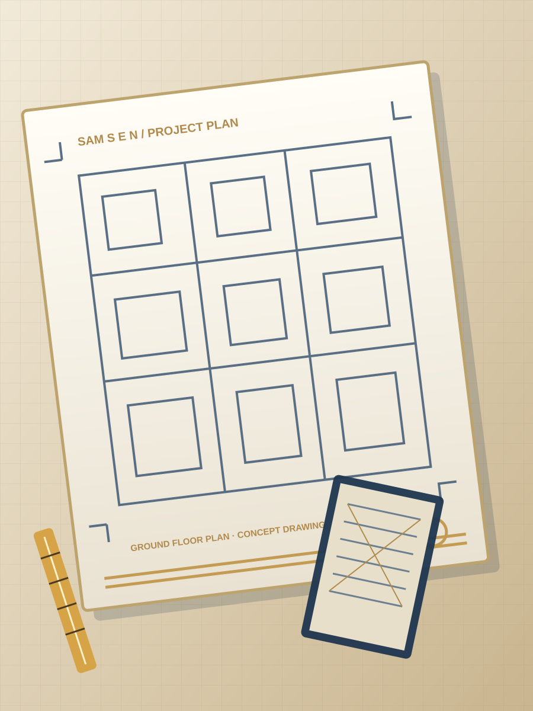
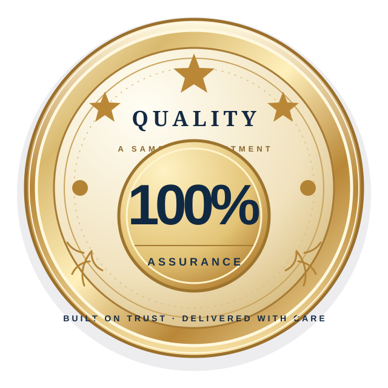

VISION
CREATING WITH PASSION AND INNOVATION, WORLD CLASS INFRASTRUCTURE TO MAKE HUMAN LIFE COMFORTABLE.
THE PEOPLE & PRINCIPLES BEHIND OUR WORK
Innovation Beyond Imagination
WHO WE ARE

We are reckoned as an eminent pioneer in the construction industry. Since Inception the company has always strived for bench mark quality, safety, uncompromising business ethics, timeless values and transparency in all spheres of business conduct, which have contributed in making it a preferred construction brand in Chennai.
Samsen Engineering Contractor is a process driven organization and superior execution capability is one its core strength. Samsen, is engaged in providing qualitative services for construction industries.
These services includes Industrial projects , Residential and Commercial Buildings, property development, Interior works , Turn Key Projects , Valuation and contracts. The offered services are highly acclaimed by our clients for their consistency, swiftness, flexibility, versatility, cost-effectiveness and timely completion.
We have been able to revolutionize the Construction field by sorting out innovative ways to completely satisfy the clients and customers. Thus, we used ‘Innovation Beyond Imagination’ as a caption of Samsen Engineering Contractor.
We believe our projects should reflect engineering excellence with a view to providing complete customer satisfaction. Our group is highly regarded for its transparency , fair play, integrity and honesty.
SAMSEN ENGINEERING CONTRACTOR IS AN ORGANIZATION WHERE QUALITY MEETS EXCELLENCE, TECHNOLOGY MEETS AESTHETICS AND PASSION MEETS PERFECTION.
CREATING WITH PASSION AND INNOVATION, WORLD CLASS INFRASTRUCTURE TO MAKE HUMAN LIFE COMFORTABLE.
PROFITABLE GROWTH THROUGH SUPERIOR PROJECT MANAGEMENT, INNOVATION, QUALITY AND COMMITMENT.
OUR COMMITMENT
Committed to supplying construction services of consistent quality that conform fully with company and statutory requirements and in meeting our client’s documented and implied expectations in terms of technical, budget and time compliance.

OUR PROMISE · QUALITY IN EVERY DETAILLEADERSHIP
A Energetic professional with 20 years of experience in various civil engineering projects. He passed out of Bachelor degree in NIT(REC) Trichy and MBA (Project Management). Working experience with major industries like L&T, Sobha Developers and expertise in high rise buildings.
A Enthusiastic professional with 15 years of experience in construction industry after passed out of graduate. Working experience with sobha developers, VGN and overseas experience. Dedicated, well organized in the execution with capable of arranging mobilization and on time delivery in execution.